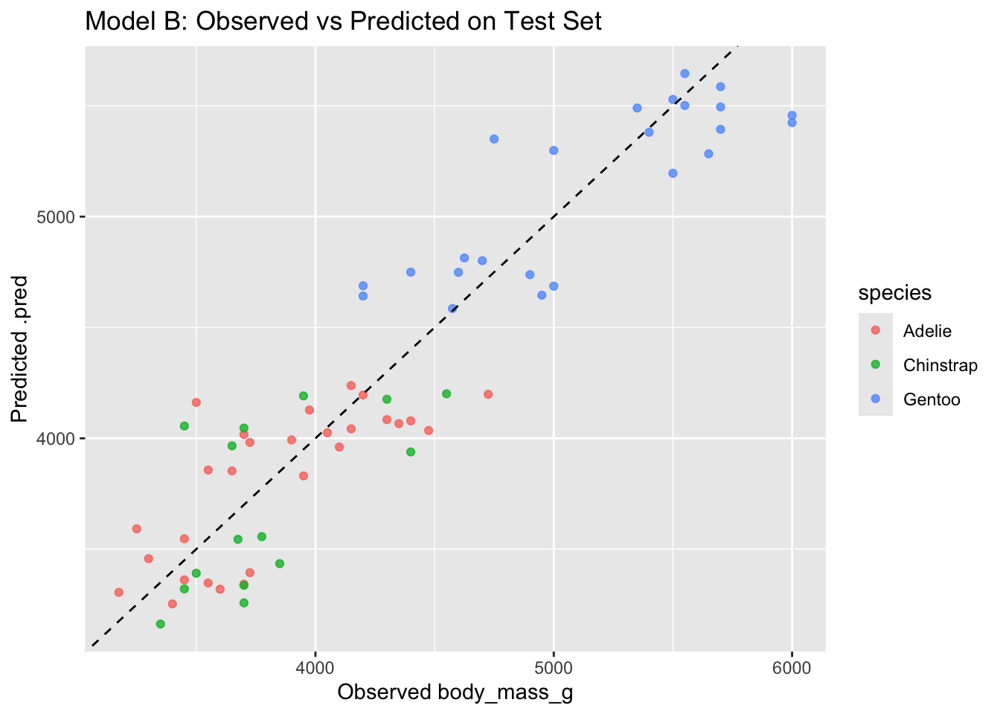
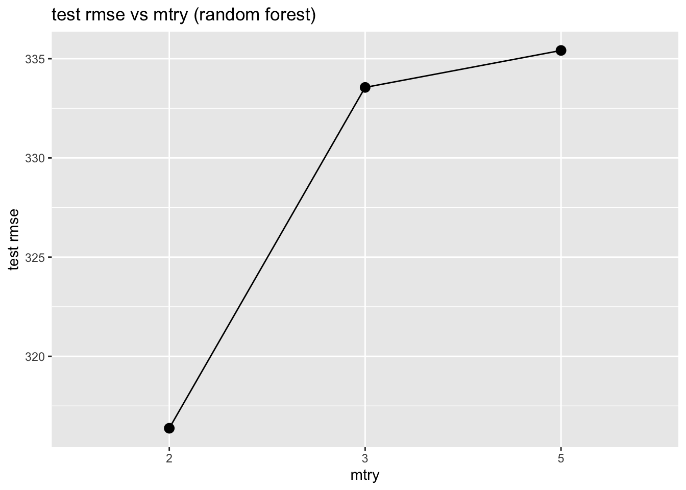
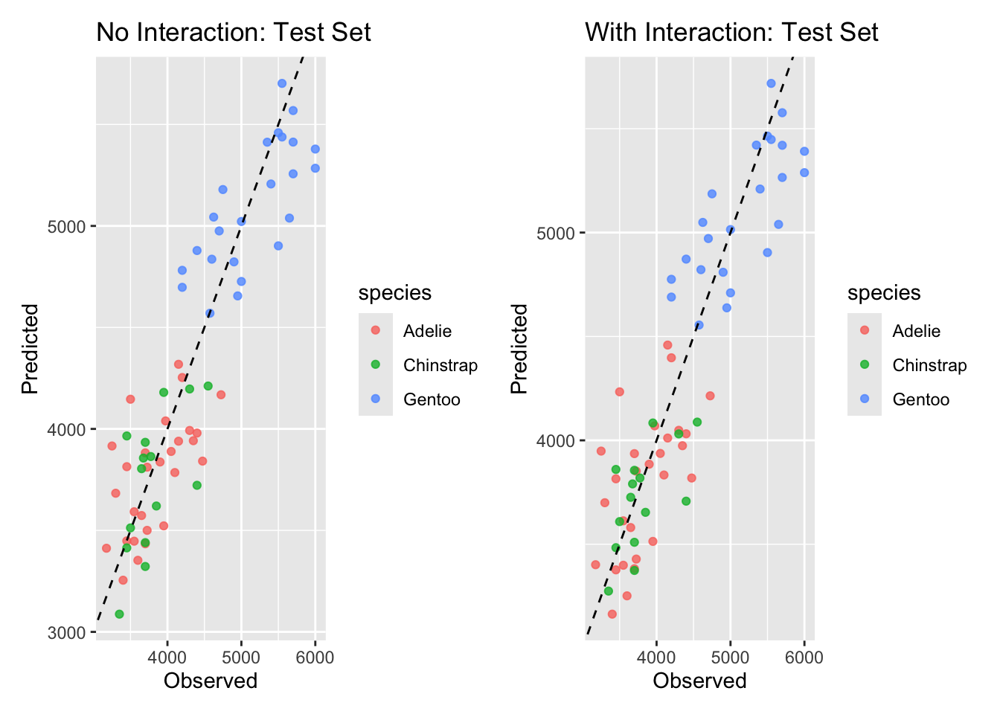

# shared setup
library(tidymodels)
library(palmerpenguins)
library(dplyr)
library(ggplot2)
library(vip)
# feature engineering
penguins <- na.omit(penguins)
# create a single train/test split used for all problems
set.seed(123)
p_split <- initial_split(penguins, prop = 0.8)
p_train <- training(p_split)
p_test <- testing(p_split)
# metrics set we will use later on
reg_metrics <- metric_set(rmse, rsq, mae)Machine learning paradigms and workflows – Part 02
Overview of ML paradigms and workflows in R
Pre-lecture activities
Tip
We will continue with tidymodels, so there is nothing else to install for the lecture. However, if you want to see a different linear regression model workflow with the penguins dataset, checkout this tutorial:
Lecture
Acknowledgements
Material for this lecture was borrowed and adopted from
Learning objectives
NoteLearning objectives
At the end of this lesson you will:
- Use
tidymodelsas collection of packages for modeling and machine learning usingtidyverseprinciples - Be able to fit a linear regression model and a random forest model to be used for prediction in supervised learning
- Be able to split data into “train” and “test” to reduce overfitting and improve model performance
Slides
Class activity
For the rest of the time in class, we will practice implementing more ML models with the same penguins dataset.
NoteObjectives of the activity
- Extend the linear regression example using additional predictors and compare performance
- Understand how a playing with hyperparameters can change model performance
- Explore whether adding interaction terms improves predictions
For this in-class activity, you can work alone or find a partner. I encourage you to find a partner so you can discuss the questions asked below.
Part 1
Using penguins dataset discussed in class, we will first extend the linear regression example using additional predictors and compare the model performances. Using this dataset, build two linear regression models predicting body_mass_g using:
- Model A:
bill_length_mm+species - Model B:
bill_length_mm+flipper_length_mm+species+sex
Use the same train/test split for both models. Then, compare RMSE and R^2 between Model A and Model B on:
- the training set
- the test set
Think about and discuss these questions with a partner (or to yourself):
- Which model performs better?
- Did adding predictors help?
- Is there evidence of overfitting?
TipSolution
First, we will load libraries and split the data into train and test
Next, we will compare Model A vs Model B
# Model A: bill_length_mm + species
model_a <- linear_reg() %>% set_engine("lm") %>% set_mode("regression") %>%
fit(body_mass_g ~ bill_length_mm + species, data = p_train)
# Model B: bill_length_mm + flipper_length_mm + species + sex
model_b <- linear_reg() %>% set_engine("lm") %>% set_mode("regression") %>%
fit(body_mass_g ~ bill_length_mm + flipper_length_mm + species + sex, data = p_train)
# predictions and metrics on training set
pred_a_train <- predict(model_a, p_train) %>% bind_cols(p_train)
pred_b_train <- predict(model_b, p_train) %>% bind_cols(p_train)
metrics_a_train <- pred_a_train %>% reg_metrics(truth = body_mass_g, estimate = .pred)
metrics_b_train <- pred_b_train %>% reg_metrics(truth = body_mass_g, estimate = .pred)
# predictions and metrics on test set
pred_a_test <- predict(model_a, p_test) %>% bind_cols(p_test)
pred_b_test <- predict(model_b, p_test) %>% bind_cols(p_test)
metrics_a_test <- pred_a_test %>% reg_metrics(truth = body_mass_g, estimate = .pred)
metrics_b_test <- pred_b_test %>% reg_metrics(truth = body_mass_g, estimate = .pred)
# print results
cat("=== Model A: Training metrics ===\n"); print(metrics_a_train)=== Model A: Training metrics ===# A tibble: 3 × 3
.metric .estimator .estimate
<chr> <chr> <dbl>
1 rmse standard 371.
2 rsq standard 0.790
3 mae standard 292. cat("\n=== Model B: Training metrics ===\n"); print(metrics_b_train)
=== Model B: Training metrics ===# A tibble: 3 × 3
.metric .estimator .estimate
<chr> <chr> <dbl>
1 rmse standard 287.
2 rsq standard 0.874
3 mae standard 228. cat("\n=== Model A: Test metrics ===\n"); print(metrics_a_test)
=== Model A: Test metrics ===# A tibble: 3 × 3
.metric .estimator .estimate
<chr> <chr> <dbl>
1 rmse standard 383.
2 rsq standard 0.764
3 mae standard 317. cat("\n=== Model B: Test metrics ===\n"); print(metrics_b_test)
=== Model B: Test metrics ===# A tibble: 3 × 3
.metric .estimator .estimate
<chr> <chr> <dbl>
1 rmse standard 300.
2 rsq standard 0.854
3 mae standard 254. # compare observed vs predicted on test set for Model B (more features)
ggplot(pred_b_test, aes(x = body_mass_g, y = .pred, color = species)) +
geom_point(alpha = 0.8) +
geom_abline(linetype = "dashed") +
labs(title = "Model B: Observed vs Predicted on Test Set",
x = "Observed body_mass_g", y = "Predicted .pred")
Generally:
- if Model B improves test rmse (and not only train rmse), added predictors help generalization
- if Model B reduces train rmse a lot, but test rmse does not improve (or worsens), that suggests overfitting
Part 2
In this question, we will use the training set from above, but now we will switch to random forests. There is an argument called mtry = 3 used to identify the number of features sampled for each tree. Let’s try changing it and we can “tune” the this parameter (also known as a “hyperparameter”). We will ask if this changes the model’s performance.
Using the training dataset, fit three random forest models with different mtry values:
mtry = 2mtry = 3mtry = 5
For each model:
- Fit on the training data
- Evaluate on the test data (e.g. rmse and rsq)
- Plot
mtryvs test rmse.
Think about and discuss these questions with a partner (or to yourself):
- Which
mtryyields the lowest test rmse? - Why might increasing
mtryhelp or hurt performance?
TipSolution
library(purrr)
library(tidyr)
# model set up
rf_formula <- body_mass_g ~ bill_length_mm + flipper_length_mm + sex + species
# set up a vector of mtry values (will use purrr for this)
mtry_values <- c(2, 3, 5)
# function to fit random forest and return test metrics
fit_rf_and_eval <- function(mtry_val) {
spec <- rand_forest(mtry = mtry_val, trees = 500) %>%
set_engine("ranger", importance = "impurity") %>%
set_mode("regression")
fit_obj <- spec %>% fit(rf_formula, data = p_train)
pred_test <- predict(fit_obj, p_test) %>% bind_cols(p_test)
met_test <- pred_test %>% reg_metrics(truth = body_mass_g, estimate = .pred) %>%
filter(.metric %in% c("rmse", "rsq", "mae")) %>%
mutate(mtry = mtry_val, set = "test")
# also return training metrics optionally
pred_train <- predict(fit_obj, p_train) %>% bind_cols(p_train)
met_train <- pred_train %>% reg_metrics(truth = body_mass_g, estimate = .pred) %>%
filter(.metric %in% c("rmse", "rsq", "mae")) %>%
mutate(mtry = mtry_val, set = "train")
bind_rows(met_train, met_test)
}
results_list <- map(mtry_values, fit_rf_and_eval)Warning: ! 5 columns were requested but there were 4 predictors in the data.
ℹ 4 predictors will be used.results_df <- bind_rows(results_list)
# make it into a nice table to compare all the metrics
print(results_df %>% pivot_wider(names_from = c(set, .metric), values_from = .estimate))# A tibble: 3 × 8
.estimator mtry train_rmse train_rsq train_mae test_rmse test_rsq test_mae
<chr> <dbl> <dbl> <dbl> <dbl> <dbl> <dbl> <dbl>
1 standard 2 193. 0.944 153. 316. 0.840 257.
2 standard 3 157. 0.963 124. 334. 0.825 269.
3 standard 5 150. 0.966 119. 335. 0.825 269.Finally, we plot mtry vs test rmse
results_df %>%
filter(set == "test", .metric == "rmse") %>%
ggplot(aes(x = factor(mtry), y = .estimate, group = 1)) +
geom_point(size = 3) + geom_line() +
labs(title = "test rmse vs mtry (random forest)",
x = "mtry", y = "test rmse")
Generally:
- Small
mtryreduces correlation between trees and may reduce overfitting - Large
mtrylets trees be more similar to full trees (may reduce bias but increase variance)
Part 3
In this question, fit two linear regression models to predict body_mass_g:
- Model without interaction:
body_mass_g ~ bill_length_mm + flipper_length_mm + species - Model with interaction:
body_mass_g ~ bill_length_mm * species + flipper_length_mm
You want want to compare both models on the train and test rmse. Then, create a visualization of predicted vs actual body mass for the test set for each model.
Think about and discuss these questions with a partner (or to yourself):
- Did adding interactions help?
- Why might interactions between
bill_length_mmandspeciesmatter biologically?
TipSolution
# model without interaction
model_no_int <- linear_reg() %>% set_engine("lm") %>% fit(
body_mass_g ~ bill_length_mm + flipper_length_mm + species,
data = p_train
)
# model with interaction between bill_length_mm and species
model_int <- linear_reg() %>% set_engine("lm") %>% fit(
body_mass_g ~ bill_length_mm * species + flipper_length_mm,
data = p_train
)
# evaluate on train set
pred_no_int_train <- predict(model_no_int, p_train) %>% bind_cols(p_train)
pred_int_train <- predict(model_int, p_train) %>% bind_cols(p_train)
metrics_no_int_train <- pred_no_int_train %>% reg_metrics(truth = body_mass_g, estimate = .pred)
metrics_int_train <- pred_int_train %>% reg_metrics(truth = body_mass_g, estimate = .pred)
# evaluate on test set
pred_no_int_test <- predict(model_no_int, p_test) %>% bind_cols(p_test)
pred_int_test <- predict(model_int, p_test) %>% bind_cols(p_test)
metrics_no_int_test <- pred_no_int_test %>% reg_metrics(truth = body_mass_g, estimate = .pred)
metrics_int_test <- pred_int_test %>% reg_metrics(truth = body_mass_g, estimate = .pred)
# print results
cat("=== No interaction: Training ===\n"); print(metrics_no_int_train)=== No interaction: Training ===# A tibble: 3 × 3
.metric .estimator .estimate
<chr> <chr> <dbl>
1 rmse standard 336.
2 rsq standard 0.828
3 mae standard 266. cat("\n=== Interaction: Training ===\n"); print(metrics_int_train)
=== Interaction: Training ===# A tibble: 3 × 3
.metric .estimator .estimate
<chr> <chr> <dbl>
1 rmse standard 331.
2 rsq standard 0.832
3 mae standard 259. cat("\n=== No interaction: Test ===\n"); print(metrics_no_int_test)
=== No interaction: Test ===# A tibble: 3 × 3
.metric .estimator .estimate
<chr> <chr> <dbl>
1 rmse standard 342.
2 rsq standard 0.811
3 mae standard 279. cat("\n=== Interaction: Test ===\n"); print(metrics_int_test)
=== Interaction: Test ===# A tibble: 3 × 3
.metric .estimator .estimate
<chr> <chr> <dbl>
1 rmse standard 345.
2 rsq standard 0.807
3 mae standard 282. Finally, let’s visualize
# visualization: test set predicted vs observed for both models
p1 <- ggplot(pred_no_int_test, aes(x = body_mass_g, y = .pred, color = species)) +
geom_point(alpha = 0.8) + geom_abline(lty = 2) +
labs(title = "No Interaction: Test Set", x = "Observed", y = "Predicted")
p2 <- ggplot(pred_int_test, aes(x = body_mass_g, y = .pred, color = species)) +
geom_point(alpha = 0.8) + geom_abline(lty = 2) +
labs(title = "With Interaction: Test Set", x = "Observed", y = "Predicted")
# Print side-by-side (requires patchwork or cowplot). If not available, print separately.
if (requireNamespace("patchwork", quietly = TRUE)) {
print(p1 + p2)
} else {
print(p1); print(p2)
}
# Optional: inspect interaction coefficients
tidy(model_int)# A tibble: 7 × 5
term estimate std.error statistic p.value
<chr> <dbl> <dbl> <dbl> <dbl>
1 (Intercept) -4473. 725. -6.17 2.57e- 9
2 bill_length_mm 83.3 12.6 6.60 2.37e-10
3 speciesChinstrap 1465. 825. 1.78 7.69e- 2
4 speciesGentoo 717. 706. 1.01 3.11e- 1
5 flipper_length_mm 26.0 3.45 7.52 9.01e-13
6 bill_length_mm:speciesChinstrap -49.8 18.5 -2.69 7.56e- 3
7 bill_length_mm:speciesGentoo -16.1 16.6 -0.972 3.32e- 1Generally:
- if the interaction model lowers test RMSE, the interaction helped generalization. here, the interaction term allows the slope between bill length and body mass to differ by species — biologically reasonable if species have different scaling relationships.
- also it’s worth checking whether the interaction model greatly improves training fit but not test fit (overfitting warning).